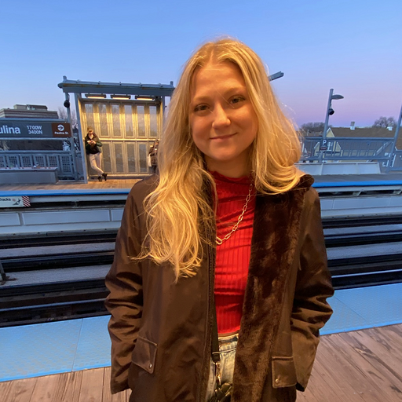

My name is Kristen Kordesh and I am currently a student at Eleven Fifty Academy studying Web Development. In this course I am learning the basics of web development, as well as JavaScript, HTML, CSS, React, and more. As both an employee and an individual I work with diligency and enthusiasm. I hope to become a valuable asset to a development team after I complete this course.
In May of 2022, I graduated from Indiana University with a bachelors degree in Animal Behavior. After that, I worked as a shift leader at a pet boarding facility. My goal was to eventually work in animal rehabilitation or conservation. While still passionate about animals, I decided that I would be more suited in a different career path, which is what brought me to the world of coding.